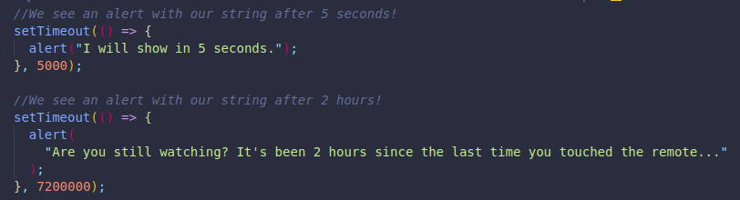
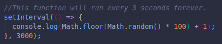
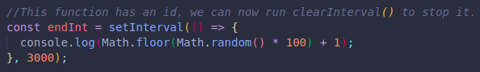
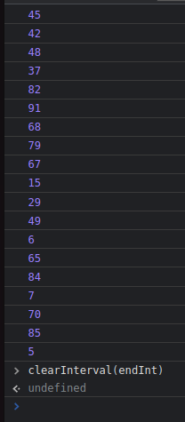

This helps us create a delay for whatever we are trying to execute.
It will execute the callback after a specified time in milliseconds.
It takes 2 arguments, the first for the callback, and the second for the amount of time.
The two arguments go inside the setTimeout parenthesis. They must be separated by a comma.
It only runs one time.
This one helps us do the same thing but multiple times.
It will repeat the callback every specified time.
If we give the code an id, we can then call the id with stopInterval(id), or it will keep running forever.
 